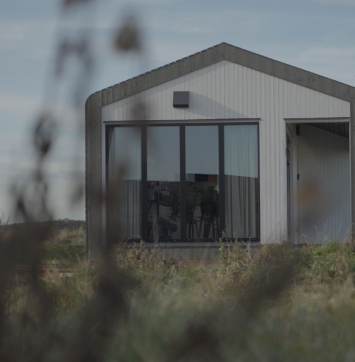

Durable materials
All EcoCabins have a high insulation value, are produced with sustainable and / or natural materials where possible and have the "round corners" as a striking external characteristic, made possible by the specific use of materials. The advantages of building with wood are many: wood is light, flexible, insulates well and builds quickly and efficiently.
Innovative
-
Our goal is to continuously further develop and innovate the EcoCabins, so that the EcoCabins are ultimately 100% sustainable and circular. A condition for this is that the EcoCabins remain affordable. With the help of the sun, the wind and the best insulation you can enjoy.
-
All EcoCabins have a high insulation value, are produced with sustainable and / or natural materials where possible and have the 'round corners' as a striking external characteristic, made possible by the specific use of materials. The advantages of building.

-
Wood
De draagconstructies van EcoCabins bestaan uit hout. Hout is duurzaam en.
-
Glass wool
De combinatie van glaswol met een houtskelet constructie geeft een.
-
Workmanship
De draagconstructies van EcoCabins bestaan uit hout. Hout is duurzaam en.
-
Triple glass
De combinatie van glaswol met een houtskelet constructie geeft een.
-
Steel base
Het stalen onderstel is sterk zijn en heeft de benodigde stijfheid die
-
Infrared floor
De vloer wordt opgewarmd middels opgewekte warmte uit eigen zonne-energie.